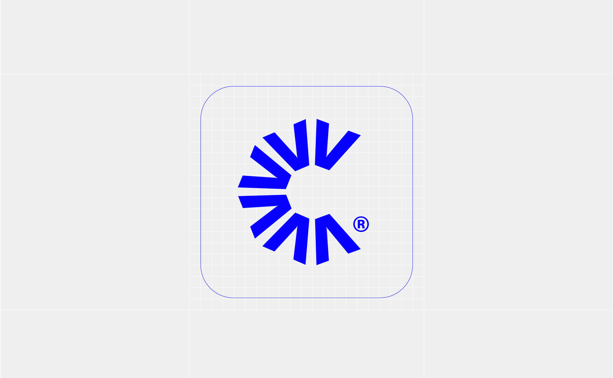
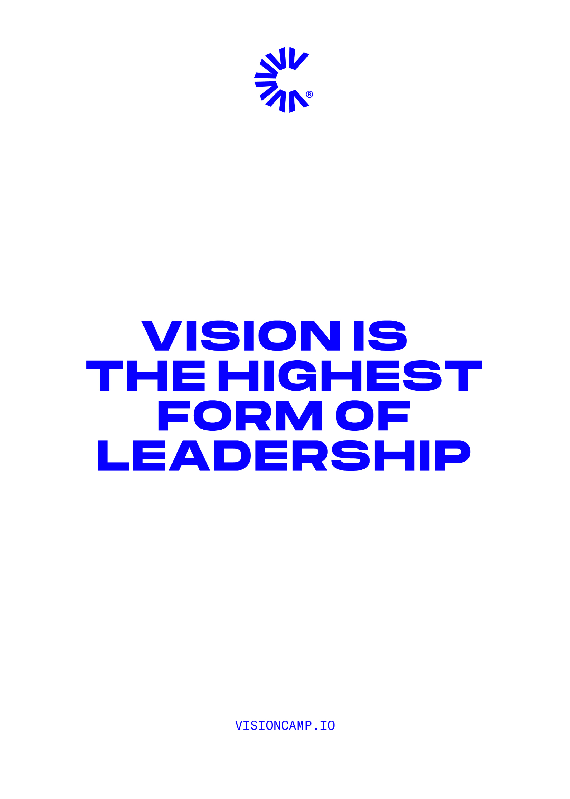
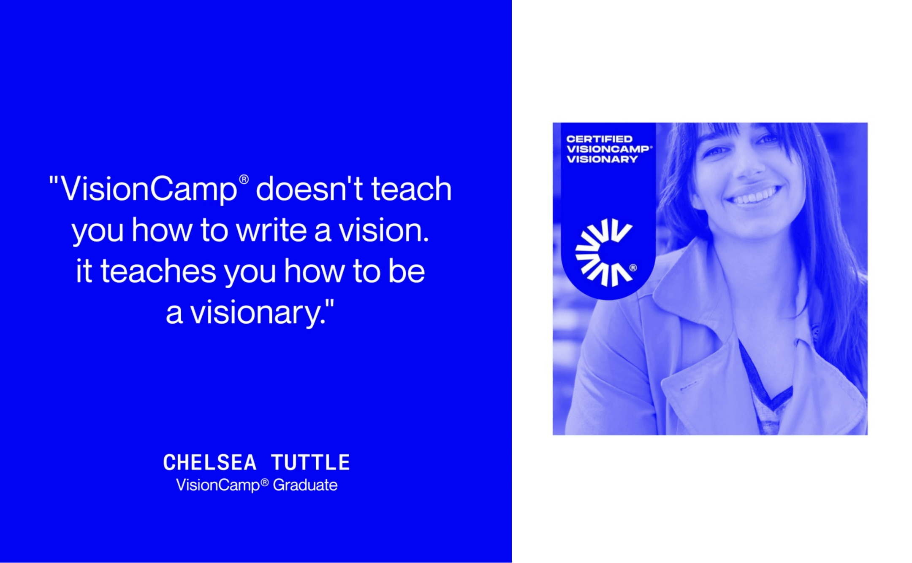
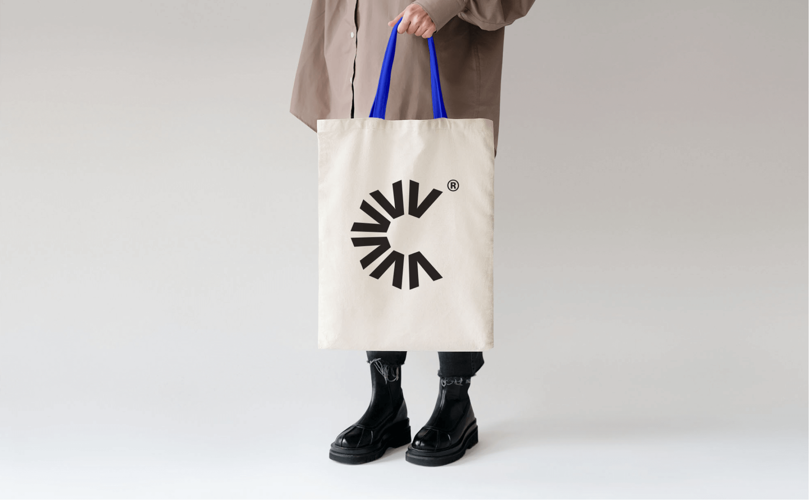

A 10-day Brand sprint for VisionCamp
We helped the Motto agency create the visual identity for the inspiring "VisionCamp" workshop for
entrepreneurs. Our collaboration resulted in a compelling narrative that
motivates participants to reach their full potential.
Client |
Motto
Strategy | Eden Vidal
Creative Director | Liri Argov, Inbal
Lapidot Vidal
Brand Designer | Anastasia Vlasenko



